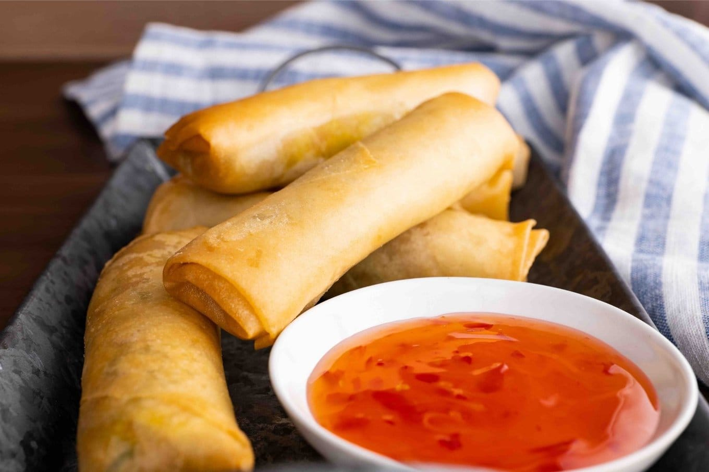

Spring Rolls Recipe

Make this easy version of spring rolls with children – fill crisp pastry parcels with chicken and vegetables and serve with a homemade dipping sauce
Ingredients
- 300g pack cooked rice noodles
- 400g mixed vegetables, such as red peppers, beansprouts, carrots, Chinese leaf cabbage and spring onions, thinly sliced
- 100g cooked chicken or duck, shredded
- 2 garlic cloves
- ginger
- soy sauce
- Chinese five-spice powder
- C8-10 sheets of brik or filo pastry
- Eggs
- Sesame Seeds
- Salt & Sugar Ketchup
- White Wine Vinegar
- caster sugar
Steps
- Heat the oven to 200C/180C fan/gas 6. Before you get the kids cooking, put the noodles, vegetables and chicken in individual bowls for everyone to help themselves. Get everyone to wash their hands and put aprons on. Sit the kids down and give them their own mixing bowl and spoon. Let them choose which ingredients they want (noodles are essential) in their rolls and if they want to graze as they choose, that's fine – all the ingredients are cooked or can be eaten raw. Add a bit of garlic and ginger, a tiny dash of soy and sprinkling of five-spice to each bowl and let them mix everything together.
- Push the bowl aside and lay a sheet of pastry in front of each child. Ask them to spoon the filling down one side of each sheet, then give them the beaten egg and a brush so they can brush around the edges. Help them to roll the pastry up neatly by folding both sides over the filling, then rolling them up.
- Lift the spring rolls onto a baking tray, seam-side down, brush with a little more egg and sprinkle with sesame seeds, if you like. Try to remember which child made which roll to save any arguments at the end! Bake for 20-25 mins or until golden.
- While the rolls are in the oven, make the dipping sauce. Get the kids to mix all the ingredients together until the sugar has dissolved. When the spring rolls are golden and crisp, remove from the oven. Leave until cool enough to handle, cut into pieces for smaller kids, then let them eat, dipping the rolls into the sauce.
Home